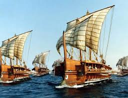

Ancient Boats & Rafts
Era: 10,000 BCE – onward
Early humans built simple rafts and dugout canoes to cross rivers, fish, and explore coastlines. These early watercraft enabled trade, migration, and cultural exchange long before advanced ships existed.
Type: Early Water Transportation